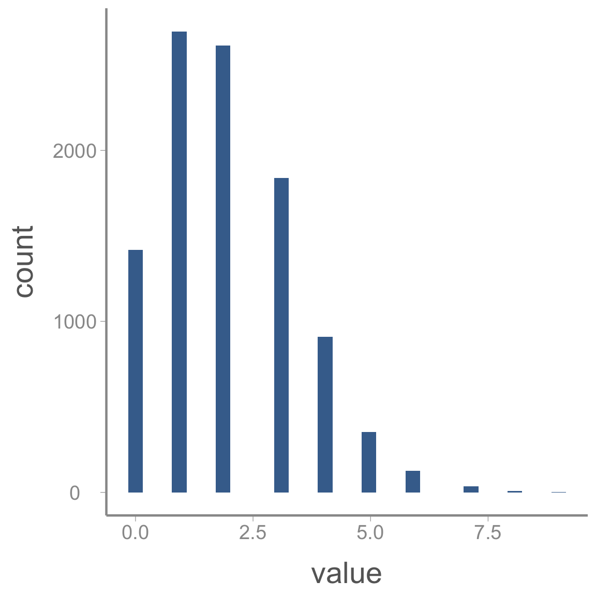
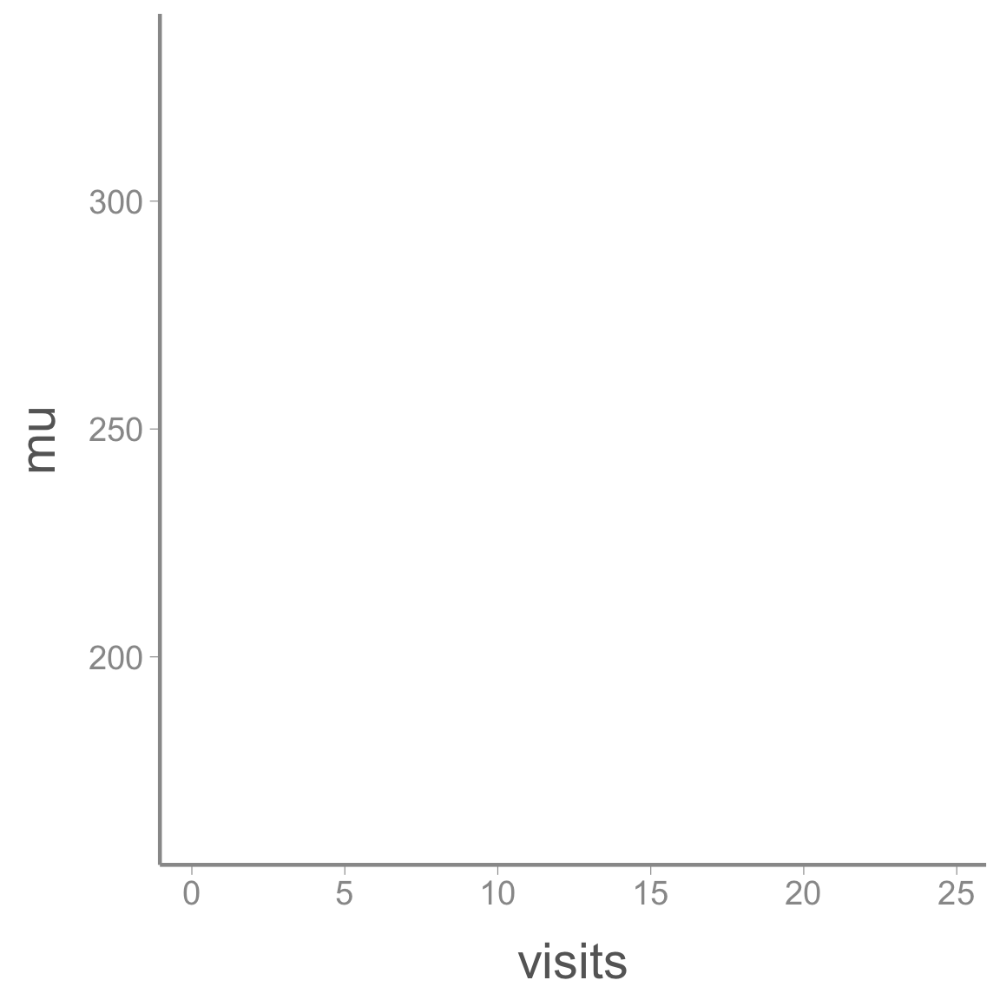
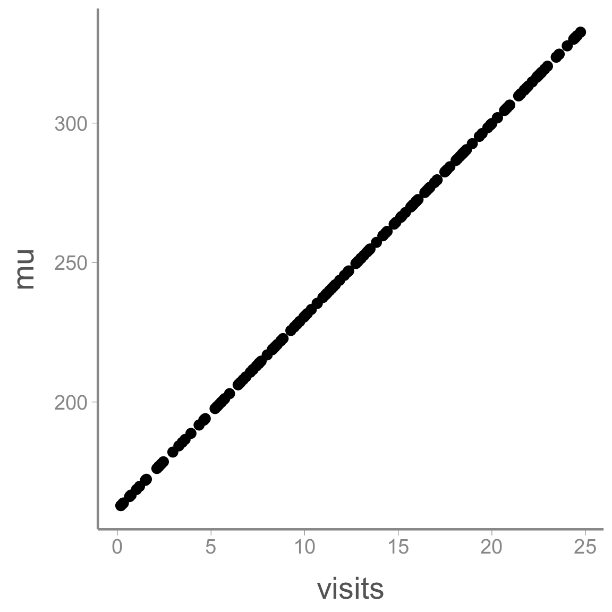
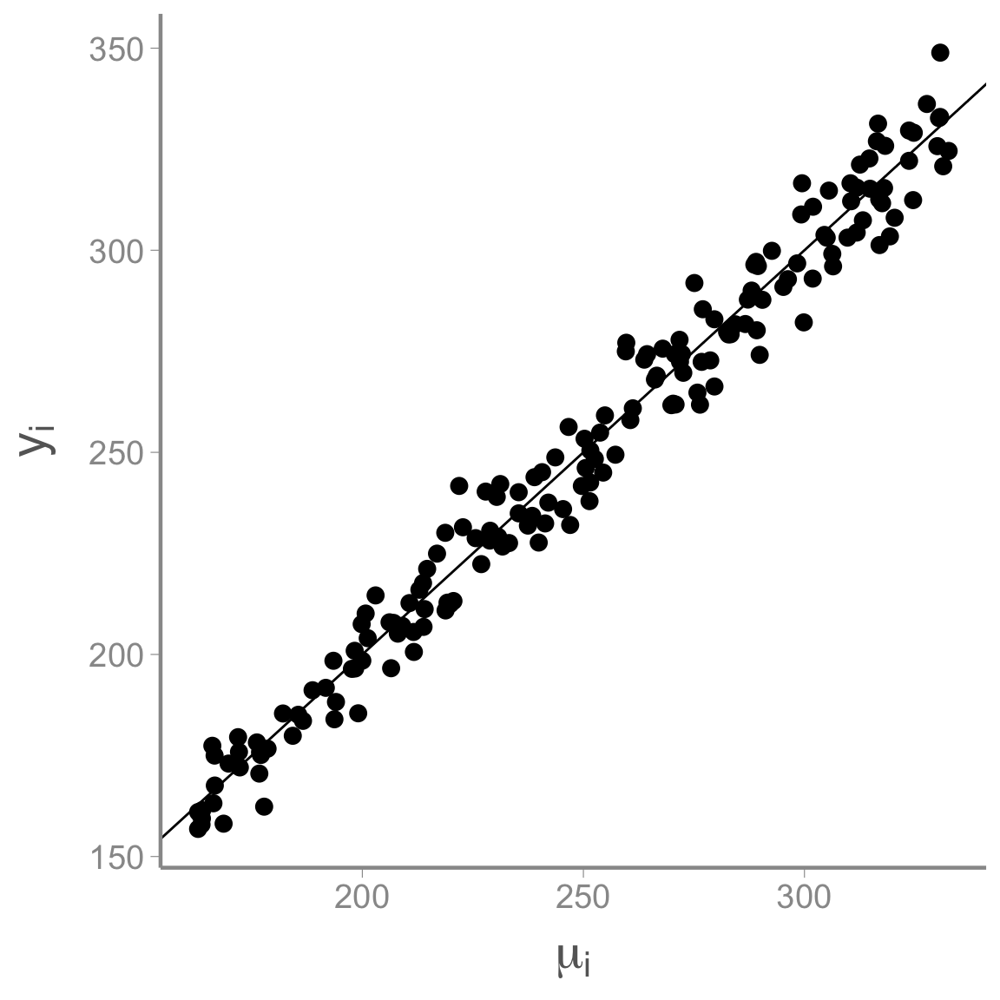

Simulating linear regression data
Lab2_simulation.RmdIn this activity, we simulate data to familiarize ourselves with the parameters of a linear regression model.
Simulating data involves many of the same tasks involved in preparing
raw data for analysis. Many of the core principles of so called “data
wrangling” are embodied by the tidyverse, a
family of packages created to make tidying, manipulating, and
visualizing data and model output more intuitive and consistent.
Throughout this semester, we will focus on using several of the
tidyverse packages to create reproducible data wrangling
scripts.
Use of the tidyverse is somewhat controversial
and it is worth noting that everything we will do in this lab can be
done using base R or non-tidyverse packages. Nonetheless, I
find the tidyverse useful because it is opinionated. The
developers of the tidyverse have spent a great deal of time thinking
about how data should be stored, manipulated, and visualized and they
have created an entire ecosystem of functions built around these
principles. Using the tidyverse isn’t so much about the tools themselves
as it is about thinking about the structure and manipulation of
data. For better or worse, focusing on consistent application
of these principles is not something base R encourages.
Objectives
Simulate data with known values to verify sampler results using reproducible code
-
Learn/review basic data manipulation tasks, including:
- Adding new variables
- Saving data
-
Rfunctions used in this exercise:
What is data simulation
Data simulation is a technique for generating random data from stochastic processes with known parameters. Although not framed as “data simulation”, we have already done this several times this semester. For example,
x <- rnorm(100, 3, 0.75)is a simple data simulation to generate random samples from a normal distribution with known mean (\mu=3) and variance (\sigma^2=0.75^2 = 0.5625).
In this exercise, we’ll learn about simulating data under more slightly complex models that are similar to the ones you might use to analyze your data. For example, imagine a simple single-season occupancy model with the probability of occupancy \psi=0.75 and detection probability p=0.4. In other words1:
z_i \sim Bernoulli(\psi)
y_i \sim Bernoulli(z_i \times p)
We can simulate a data set from this model using a few lines of
R code:
nSites <- 100 # Number of sites
nVisits <- 3
psi <- 0.75 # Occupancy probability
p <- 0.4 # Detection probability
z <- rbinom(n = nSites, size = 1, prob = psi) ## Generate true state of each site;
## nb Bernoulli = binomial with size = 1
y <- rbinom(n = nSites*nVisits, size = 1, prob = z * p) ## Generate observations
y <- matrix(y, nrow = nSites, ncol = nVisits)With those seven lines of code, we now how a fake data set that could be fed into an occupancy model to estimate \psi and p.
Why simulate data?
At first, it may seem strange to generate a fake data set just so we can run it through a modeling exercise to get answers we already know. But data simulation is a powerful technique in your toolbox as an ecological modeler. There are a number of reasons data simulation is useful2:
Truth is known: Usually when we apply a model to data, we don’t know the true parameter values that generated the data. In this case, you may be able to fit the model but you’ll never know if it got the right answer. With simulated data, you can check whether your model returns the known parameter values. This is a useful way to make sure you code is doing what you think it’s doing.
Sampling error: As we already learned, sampling error is an inherent part of any ecological analysis. The noise that results from sampling error makes it harder to detect the true signals in our process model. With real data, you only have a single data set, which makes it hard to understand the effect of sampling error on your inference. With simulated data, you can generate hundreds or even thousands of data sets from the same process/observation models, allowing you to observe the effects of sampling error directly.
Check characteristics of estimators: Related to point 1, with a complex model and just a single data set it’s difficult to determine whether the estimators you are using are well-behaved; that is, do they return estimates that are unbiased and precise. With simulated data, you can directly quantify these properties.
Power analysis: By varying the effect sizes and sample sizes in your simulated data, you can easily perform power analyses. Using simulated data in this way can be very useful for designing field studies or helping to interpret inferences after data has been collected and analyzed.
Check identifiability/estimability of parameters: In Bayesian models, we can always obtain posterior distributions for every parameter in our model. However, these posteriors are not always useful. In some cases, our data may provide little-to-no information about the value of a parameter and therefore the posterior distribution for this parameter will simply be determined by the prior. This lack of identifiability may be caused by intrinsic properties of our model (for example, if two parameters are completely confounded such that different combinations of parameter values have the same likelihood) or because our data do not provide enough information to estimate all parameters in the model (for example, a regression model with dozens of predictors but few observations). Although there are rigorous methods for testing intrinsic identifiability, this task can be extremely difficult for complex hierarchical models. Simulated data allow you to check whether all parameters in your model can be estimated by generating replicate data sets that have the same properties (sample size, etc) as your data.
Check robustness to violations of model assumptions: All models have assumptions about how the data were generated. These assumptions stem from the way we formulate the process and observation models. Of course, most assumptions will be violated to some degree in real data sets. With simulated data sets, we can generate data that we know violate the assumptions of the model in one or more ways (e.g., generating heterogeneous survival probabilities for a model that assumes constant survival). By comparing the parameters estimates from these “mis-specified” data sets, we can gauge the degree to which our inferences are sensitive to violations.
Better understand your model: One good way to test whether you really understand your model is to see if you can write the code to simulate data under the model. In many cases, this exercise will uncover misunderstandings or lack of understanding about what the model is actually doing. Simulating data is a good way to make sure you understand what each parameter in your model actually represents. If you can simulate data from each part of the model, chances are you can also figure out why your model may not be working the way you think it does. In short, simulating data is a great way to develop a deeper understanding of your model.
Simulating linear regression data
In this exercise, we will simulate and visualize data generated under a very general process model: a linear regression. Because I’m probably too guilty of being animal focused, we will assume the response variable of the model are counts of the number of seeds produced by the flowers of a rare, endangered orchid. As ecologists studying this orchid, we want to know whether seed production is related to the number of visits by the orchid’s specialist pollinator. Perhaps if it is, we can increase the growth rate of the orchid population by boosting abundance of the pollinator (assuming the number of visits is a function of pollinator abundance).
So we hypothesize that seed number will increase linearly with pollinator visitation. This hypothesis can then be translated into a process model:
y_i = \alpha + \beta * x_i + \epsilon_i \epsilon_i \sim Normal(0, \sigma^2) where y_i is the number of seeds counted in flower i and x_i is the number of pollinator visits. For simplicity, we will assume that we record both y_i and x_i without error. In this model, \alpha and \beta are regression coefficients that govern the relationship between seed counts and visitation and \epsilon_i is a normally distribution error term. You may recognize this as a basic linear regression model with a single covariate x.
Choosing a probability distribution to describe seed counts
Earlier in the semester, we discussed the Poisson distribution as the default distribution for data that have to be positive integers (e.g., count data). However, in this case, our choice of a linear regression implies normally distributed data. Is this choice justified?
First of all, remember that a linear model is composed to two parts:
response = deterministic\; part+stochastic\; part
The distributional assumptions of a linear model refer to the residuals (the \epsilon_i’s). That is, we assume that there is stochastic error in the response variable (y_i) and this error is equally likely to produce values that are larger or smaller than the value predicted by the deterministic portion of the model (\alpha + \beta * x_i).
For small counts, the Poisson distribution is asymmetrical, meaning that we are more likely to generate values that are larger than the mean than smaller than the mean. You can see this clearly in the histogram below, which was generated from Poisson(\lambda = 2):

In this case, assuming the error terms are normally distribution would likely be inappropriate. However, as counts get larger, the Poisson distribution starts to appear more “normal”:
In this case, \mu = \lambda = 500.
So as counts get bigger, there will be very little difference in the
results of a linear regression or a Poisson GLM.
***
Step 0: Set up your workspace and directories
Hopefully you have already created a main directory for this course
when you started the homework assignment for last week. If you have not
already done so, create a sub-directory of that folder called
data.
For this exercise, create a new script and add it to whatever
sub-directory you will use to store analysis scripts (alternatively, you
could add this script to the data or data-raw
folders since we’ll use it to create data. Just use whatever system
makes most sense to you). In the next section, copy the code from the
markdown file into this script.
Step 1: Set the model parameters
The first step to simulating data is to set the fixed values that are needed to generate the stochastic data. This usually includes the sample size, covariate and parameter values and any other fixed value relevant to the analysis. In this case, we’ll first set the number of flowers that we counted seeds from:
N <- 175 # Number of flowersNext, we need to generate the covariate values, in this case pollination visits. We’ll store these values in a data frame and assume the number of visits ranges from 0 to 25:
sim_df <- data.frame(visits = runif(N, 0, 25)) # Number of pollination visitsA common task during data preparation is adding new variables that
are derived from variables in the raw data. In our example, we might
want to add a new variable with scaled values of the covariate.
In most analyses, it is good practice to scale covariate values so they
have a mean of 0 and do not extend too far above and below 0 (very large
values (positive or negative) can create numerical issues when fitting
models). So next we center and scale the visit covariate (we’ll do it
manually but it could also be done using the built-in function
scale() or by simply simulating data from a normal
distribution in the first place).
In the tidyverse, the workhorse of adding new variables in
dplyr::mutate():
You can check that the covariate now has mean = 0 and sd = 1.
NOTE
It can sometimes be confusing to know which functions come from which
packages (or to know which function R will default to
using). For this reason, it’s good practice to get in the habit of using
the package::function() syntax, as we did for
mutate() above. Using this syntax makes explicit which
package/function you intend to use which makes your code easier for
other to understand and reduces the potential for errors. As a benefit,
you can stop using library(package) at the beginning of
each script.
Finally, we need to set the parameter values for the regression models. This is where understanding what each parameter represents is very helpful. For example, \alpha is the expected number of seeds when the covariate has a value of 0 (because we centered visits, we interpret \alpha to be the expected number of seeds at the mean number of visits):
alpha <- 250 # Expected number of seeds at mean number of visitsNow we set \beta coefficient. We have already said the \beta is positive (seed count increases with visits). All that’s left is to decide a specific value. Remember that we interpret \beta as the additional number of seeds for 1 sd increase in the number of visits.
beta <- 50 # Effect of visits on seed countStep 2: Generate expected counts
To generate the simulated seed counts for each flower, we first have to calculate \mu_i, the expected seeds for each flower. We get these values by simply plugging in the observed visitation values for each site to our linear model:
\begin{bmatrix} \mu_1 \\ \mu_2 \\ \mu_3 \\ .\\ .\\ .\\ \mu_N \end{bmatrix} = \begin{bmatrix} 1 & visits_1\\ 1 & visits_2\\ 1 & visits_3\\ . & .\\ . & .\\ . & .\\ 1 & visits_N \end{bmatrix} \times \begin{bmatrix} \alpha\\ \beta \end{bmatrix}
If you remember matrix algebra, multiplying the covariate matrix by the coefficient matrix is the same as doing:
1 \times \alpha + visits_i \times \beta
The matrix of predicted responses is called the linear predictor.
Now that we have a refreshed our memory of the basic linear model structure, let’s add the predicted seed counts to the data frame:
sim_df <- dplyr::mutate(sim_df, mu = alpha + beta*visits.c)Step 2b: Plot relationships
Whenever you simulate data, it’s very useful to plot your data early and often. It is often difficult to know ahead of time exactly what response values a complex model will produce. Plots are a great way to quickly assess whether the simulation is producing values that are consistent with your domain expertise.
Brief intro to ggplot2
To be consistent with our use of the tidyverse, we will
create plots using ggplot2().
The power and flexibility of ggplot2 come from it’s
consistent structure. Although a bit overwhelming at first, once you get
the hang of it the structure actually makes it quite easy to create
highly customized publication-quality graphics. All plots created using
ggplot2 use the same underlying structure:
\underbrace{ggplot}_{initiate\; plot}(\underbrace{data = df}_{data\;frame},\; \underbrace{aes(x =\; , y = \;)}_{plot\; attributes}) + \underbrace{geom\_line()}_{geometry}
The ggplot() function initiates a new plot. In this
function, you tell ggplot2 what data frame you will be
using for the plot and you tell it how to map attributes of the data to
the visual properties of the figures. Attributes are mapped inside the
aes() argument. Attributes usually include location
(x-axis and y-axis placement), color, size,
shape, line type, and many others. In general, each attribute will be
mapped to one column of your data frame.
The ggplot() function simply initiates a graph so if you
run just that portion of the code you will get a blank graph. We can see
that by creating a new plot showing the relationship between elevation
(the x-axis of the plot) and predicted abundance (the y-axis):
ggplot(data = sim_df, aes(x = visits, y = mu))
You can see that ggplot created a figure with the
correct axes and labels. But no data. That’s because we didn’t tell
ggplot what type of geometry to use to represent
the data. Geometry refers to the actual type geometric object(s) we want
to use to display the data. Common geometries include points (e.g.,
scatterplot), lines (e.g., time series), and bars (e.g., histograms).
There are many others. Once we add a geometry, we can see the data:
ggplot(data = sim_df, aes(x = visits, y = mu)) + geom_point()
So we can see that our model predicts seed counts ranging from 171.66 individuals to 337.96. Is that reasonable? Who knows, this is a made up species. But if it wasn’t, this would be a good time to go back and play with different parameter values to generate abundances that are consistent with our domain expertise. For example, the model predicts \approx 171.66 seeds for a flower with 0 pollination visits. Maybe that makes sense (perhaps the orchids can self-pollinate if necessary) or maybe it doesn’t. If it doesn’t, we need to re-think the model structure.
Step 3: Generate the actual seed counts
So far, our simulated seed counts contain no stochastic variation (the visitation covariate is stochastic but given that value, the predicted counts are completely deterministic). To create a realistic data set, we need to add some process variance (\sigma^2_p). In our example, this requires setting another parameter that controls the amount of process variation.
sigma <- 7.5Now we simply generate random seed counts using the linear predictor and the process variation
### Generate actual abundance for each site
sim_df <- dplyr::mutate(sim_df, y = rnorm(n = N, mu, sigma))
### Plot lambda vs. N
ggplot(data = sim_df, aes(x = mu, y = y)) + geom_point() +
scale_x_continuous(expression(mu[i])) +
scale_y_continuous(expression(y[i])) +
geom_abline(slope = 1, intercept = 0)
As expected, seed count increases with \mu, though you can see the process variation that is added to the model at this stage.
Step 4: Save the simulated data
Now that we have a simulated data set, let’s save it so it’s
available for future use. There are many ways to save objects in
R but one of the most well-behaved
is saveRDS().
saveRDS(object = sim_df, file = "data/sim_seed_counts.rds")When you want to use this object in the future, all you have to do is run3:
sim_df <- readRDS("data/sim_seed_counts.rds")Homework Questions Part 1 (Easier)
We are performing a study on deer with CWD and want to simulate 20 years of abundance data on a declining population. We have a general sense that the population is declining by an average of 5% each year (e.g. E(N_{t+1}) = N_t\lambda_t), but the realized population has some stochasticity (N_{t+1} \sim Pois(E(N_{t+1}))). The population in year 1 is 475 deer. Write out a simulation for this data and use ggplot to visualize the realized population values across 20 years. Use the set.seed() command to make it reproducible.
We decide to add more complexity to our simulation and have \lambda_t vary by time. Our real data were collected between 1994 and 2016, so we’ll use environmental data from that time period. We think lambda might have a positive relationship with the degree days (daily average number of degrees above 4 C) in December of each year (e.g. \lambda_t = exp(l_0 + l_1*degreedays). Using the ‘Weather_data’ provided in the WILD8370 package (accessed via: data(Weather_data) ), simulate 20 years of population abundance. Be sure to choose reasonable values for l_0 and l_1 so that \lambda_t stays below 1.1 for all values of degree days. Don’t forget to scale the covariate! Use ggplot to visualize the realized population values across 20 years. (Note: For years that have multiple weather stations recording degree days, use the average of all weather stations as the covariate)
Homework Questions Part 2 (Slightly Harder)
- We have some GPS data from leopard frogs that we want to fit to a random-walk movement model. However, before we use our real data, we want to make a fake data set first that we can use to develop our full model. We want our simulation to contain:
- locations (1 per day for 50 days, continuous coordinates).
- what day each location was measured (day 1 to day 50)
We plan to fit the following model:
s_{i,x,t=1} \sim Uniform(0, 1)
s_{i,y,t=1} \sim Uniform(0, 1)
s_{i, x, t+1} \sim Normal(s_{i, x, t}, \sigma ^2 )
s_{i, y, t+1} \sim Normal(s_{i, y, t}, \sigma^2 )
\sigma \sim Exp(3)
where i is the individual, x and y are the x and y coordinates respectively, and \sigma is related to the frog’s average movement from their previous location. That is, the location of a frog in time t+1 is a normal centered around their location in time t. We assume we’ll have 10 frogs in our dataset.
Simulate some data based on the above model. Store the results as a 3-d array or matrix (10 by 2 by 50)
We realize we’ll need to adjust our simulation as we adjust our model. Wrap your simulation above into a function that will allow you to run the simulation with different values of \sigma and number of frogs and return the simulated movements. (E.g.
Sim <- function(sigma, nfrogs))On a 1-10 scale, with 1 being the worst week ever and 10 being the best, how would you rate this week’s content? What lingering questions/confusion about the lecture or lab do you still have?